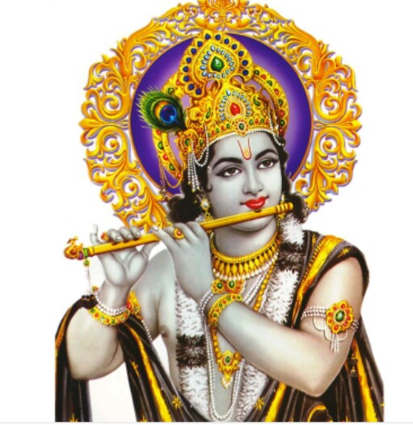

Krishna was born in northern India around 3,228 BCE to Devaki and Vasudeva of the Yadava clan.
Krishna’s childhood is celebrated for his playful and mischievous nature, often depicted stealing butter and playing pranks. He also performed heroic feats, such as killing demons like Putana and Trinavarta, and lifting the Govardhan Hill to protect villagers from Indra’s wrath.
Krishna played a pivotal role in the Mahabharata as a charioteer and guide to Arjuna during the Battle of Kurukshetra. He delivered the Bhagavad Gita, a spiritual discourse emphasizing righteousness, devotion, and self-realization.
Krishna is worshipped as the god of protection, compassion, tenderness, and love. He is revered in various forms across India, including Vrindavan, Dwarka, Jagannatha in Odisha, and Udupi in Karnataka. His life stories, collectively called Krishna Līlā, portray him as a divine child, a lover, a hero, and the universal supreme being
Krishna’s life and teachings have inspired numerous art forms, including classical dances like Bharatanatyam, Kathakali, Kuchipudi, Odissi, and Manipuri.
Krishna emphasized devotion (bhakti) as a path to self-realization, teaching that all sincere paths lead to him. His life marks the transition from the Dvapara Yuga to the Kali Yuga, symbolizing the enduring relevance of dharma and divine guidance.
Krishna remains one of the most beloved and influential figures in Hinduism, embodying divine love, wisdom, and heroism.